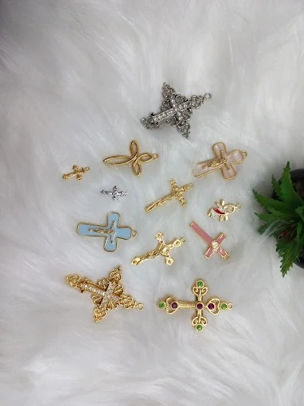
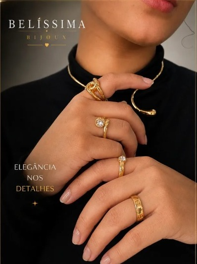
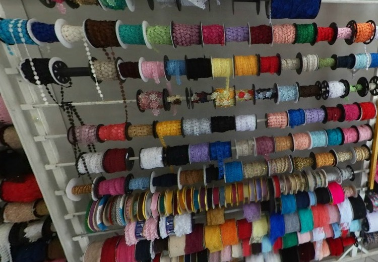
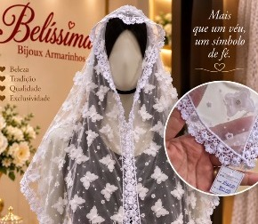
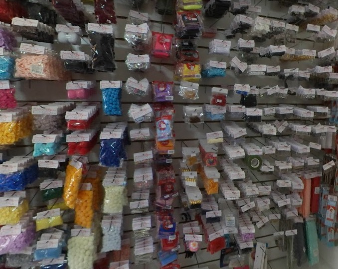

Para Criadores
Insumos completos de armarinho para transformar suas ideias manuais em realidade.
Sua loja de confiança em Itapetininga. Oferecemos uma seleção delicada de materiais para costura, aviamentos, bijouterias refinadas e véus religiosos feitos com dedicação e carinho.


“Materiais que inspiram
quem cria e acessórios que
expressam fé e carinho.” ✦
A Belíssima Bijoux Armarinhos nasceu da paixão pelas artes manuais, pela beleza nos pequenos detalhes e pela devoção. Localizada no coração de Itapetininga, São Paulo, nossa loja é um verdadeiro refúgio para artesãos, criadores e pessoas que buscam itens de qualidade e acessórios delicados.
Nosso catálogo combina a utilidade prática do armarinho tradicional com a elegância de bijouterias cuidadosamente selecionadas e a modéstia sagrada dos véus religiosos. Cada produto em nossas prateleiras é escolhido pensando na sua satisfação e nas suas criações.
Insumos completos de armarinho para transformar suas ideias manuais em realidade.
Véus religiosos com acabamentos delicados, mantendo a tradição e o respeito.

Uma grande variedade de linhas, fitas, botões, rendas e materiais para seus projetos.

Véus de oração confeccionados com delicadeza, cuidado e respeito à tradição.

Bijuterias charmosas, pérolas, miçangas e acessórios para completar seu estilo.
Curadoria rigorosa de produtos de armarinho e acessórios duráveis, resistentes e de excelente acabamento.
Incentivamos a arte do artesanato oferecendo matérias-primas que inspiram novas ideias e projetos manuais.
Atendimento humano, acolhedor e atencioso. Tratamos cada cliente e projeto com o cuidado que merecem.
Respeito e dedicação na confecção e oferta de véus religiosos e artigos que expressam a devoção espiritual.
Rua Quintino Bocaiuva n 701, Itapetininga, São Paulo, Brasil
+55 15 98107-6403
Acolhedor, personalizado e preparado para tirar suas dúvidas de artesanato.